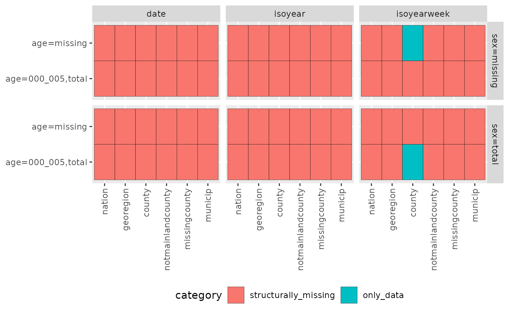

csfmt_rts_data_v2
(vignette("csfmt_rts_data_v2", package = "cstidy")) is a
data format for real-time surveillance.
d <- cstidy::generate_test_data()
cstidy::set_csfmt_rts_data_v2(d)
# Looking at the dataset
d[]
#> granularity_time granularity_geo country_iso3 location_code border age
#> <char> <char> <char> <char> <int> <char>
#> 1: isoyearweek county nor county_nor42 NA <NA>
#> 2: isoyearweek county nor county_nor32 NA <NA>
#> 3: isoyearweek county nor county_nor33 NA <NA>
#> 4: isoyearweek county nor county_nor56 NA <NA>
#> 5: isoyearweek county nor county_nor34 NA <NA>
#> 6: isoyearweek county nor county_nor15 NA <NA>
#> 7: isoyearweek county nor county_nor18 NA <NA>
#> 8: isoyearweek county nor county_nor03 NA <NA>
#> 9: isoyearweek county nor county_nor11 NA <NA>
#> 10: isoyearweek county nor county_nor40 NA <NA>
#> 11: isoyearweek county nor county_nor55 NA <NA>
#> 12: isoyearweek county nor county_nor50 NA <NA>
#> 13: isoyearweek county nor county_nor39 NA <NA>
#> 14: isoyearweek county nor county_nor46 NA <NA>
#> 15: isoyearweek county nor county_nor31 NA <NA>
#> 16: isoyearweek county nor county_nor42 NA total
#> 17: isoyearweek county nor county_nor32 NA total
#> 18: isoyearweek county nor county_nor33 NA total
#> 19: isoyearweek county nor county_nor56 NA total
#> 20: isoyearweek county nor county_nor34 NA total
#> 21: isoyearweek county nor county_nor15 NA total
#> 22: isoyearweek county nor county_nor18 NA total
#> 23: isoyearweek county nor county_nor03 NA total
#> 24: isoyearweek county nor county_nor11 NA total
#> 25: isoyearweek county nor county_nor40 NA total
#> 26: isoyearweek county nor county_nor55 NA total
#> 27: isoyearweek county nor county_nor50 NA total
#> 28: isoyearweek county nor county_nor39 NA total
#> 29: isoyearweek county nor county_nor46 NA total
#> 30: isoyearweek county nor county_nor31 NA total
#> 31: isoyearweek county nor county_nor42 NA 000_005
#> 32: isoyearweek county nor county_nor32 NA 000_005
#> 33: isoyearweek county nor county_nor33 NA 000_005
#> 34: isoyearweek county nor county_nor56 NA 000_005
#> 35: isoyearweek county nor county_nor34 NA 000_005
#> 36: isoyearweek county nor county_nor15 NA 000_005
#> 37: isoyearweek county nor county_nor18 NA 000_005
#> 38: isoyearweek county nor county_nor03 NA 000_005
#> 39: isoyearweek county nor county_nor11 NA 000_005
#> 40: isoyearweek county nor county_nor40 NA 000_005
#> 41: isoyearweek county nor county_nor55 NA 000_005
#> 42: isoyearweek county nor county_nor50 NA 000_005
#> 43: isoyearweek county nor county_nor39 NA 000_005
#> 44: isoyearweek county nor county_nor46 NA 000_005
#> 45: isoyearweek county nor county_nor31 NA 000_005
#> granularity_time granularity_geo country_iso3 location_code border age
#> sex isoyear isoweek isoyearweek isoquarter isoyearquarter season
#> <char> <int> <int> <char> <int> <char> <char>
#> 1: <NA> 2022 3 2022-03 1 2022-Q1 2021/2022
#> 2: <NA> 2022 3 2022-03 1 2022-Q1 2021/2022
#> 3: <NA> 2022 3 2022-03 1 2022-Q1 2021/2022
#> 4: <NA> 2022 3 2022-03 1 2022-Q1 2021/2022
#> 5: <NA> 2022 3 2022-03 1 2022-Q1 2021/2022
#> 6: <NA> 2022 3 2022-03 1 2022-Q1 2021/2022
#> 7: <NA> 2022 3 2022-03 1 2022-Q1 2021/2022
#> 8: <NA> 2022 3 2022-03 1 2022-Q1 2021/2022
#> 9: <NA> 2022 3 2022-03 1 2022-Q1 2021/2022
#> 10: <NA> 2022 3 2022-03 1 2022-Q1 2021/2022
#> 11: <NA> 2022 3 2022-03 1 2022-Q1 2021/2022
#> 12: <NA> 2022 3 2022-03 1 2022-Q1 2021/2022
#> 13: <NA> 2022 3 2022-03 1 2022-Q1 2021/2022
#> 14: <NA> 2022 3 2022-03 1 2022-Q1 2021/2022
#> 15: <NA> 2022 3 2022-03 1 2022-Q1 2021/2022
#> 16: total 2022 3 2022-03 1 2022-Q1 2021/2022
#> 17: total 2022 3 2022-03 1 2022-Q1 2021/2022
#> 18: total 2022 3 2022-03 1 2022-Q1 2021/2022
#> 19: total 2022 3 2022-03 1 2022-Q1 2021/2022
#> 20: total 2022 3 2022-03 1 2022-Q1 2021/2022
#> 21: total 2022 3 2022-03 1 2022-Q1 2021/2022
#> 22: total 2022 3 2022-03 1 2022-Q1 2021/2022
#> 23: total 2022 3 2022-03 1 2022-Q1 2021/2022
#> 24: total 2022 3 2022-03 1 2022-Q1 2021/2022
#> 25: total 2022 3 2022-03 1 2022-Q1 2021/2022
#> 26: total 2022 3 2022-03 1 2022-Q1 2021/2022
#> 27: total 2022 3 2022-03 1 2022-Q1 2021/2022
#> 28: total 2022 3 2022-03 1 2022-Q1 2021/2022
#> 29: total 2022 3 2022-03 1 2022-Q1 2021/2022
#> 30: total 2022 3 2022-03 1 2022-Q1 2021/2022
#> 31: total 2022 3 2022-03 1 2022-Q1 2021/2022
#> 32: total 2022 3 2022-03 1 2022-Q1 2021/2022
#> 33: total 2022 3 2022-03 1 2022-Q1 2021/2022
#> 34: total 2022 3 2022-03 1 2022-Q1 2021/2022
#> 35: total 2022 3 2022-03 1 2022-Q1 2021/2022
#> 36: total 2022 3 2022-03 1 2022-Q1 2021/2022
#> 37: total 2022 3 2022-03 1 2022-Q1 2021/2022
#> 38: total 2022 3 2022-03 1 2022-Q1 2021/2022
#> 39: total 2022 3 2022-03 1 2022-Q1 2021/2022
#> 40: total 2022 3 2022-03 1 2022-Q1 2021/2022
#> 41: total 2022 3 2022-03 1 2022-Q1 2021/2022
#> 42: total 2022 3 2022-03 1 2022-Q1 2021/2022
#> 43: total 2022 3 2022-03 1 2022-Q1 2021/2022
#> 44: total 2022 3 2022-03 1 2022-Q1 2021/2022
#> 45: total 2022 3 2022-03 1 2022-Q1 2021/2022
#> sex isoyear isoweek isoyearweek isoquarter isoyearquarter season
#> seasonweek calyear calmonth calyearmonth date deaths_n
#> <num> <int> <int> <char> <Date> <int>
#> 1: 21 NA NA <NA> 2022-01-23 2
#> 2: 21 NA NA <NA> 2022-01-23 7
#> 3: 21 NA NA <NA> 2022-01-23 5
#> 4: 21 NA NA <NA> 2022-01-23 3
#> 5: 21 NA NA <NA> 2022-01-23 1
#> 6: 21 NA NA <NA> 2022-01-23 5
#> 7: 21 NA NA <NA> 2022-01-23 5
#> 8: 21 NA NA <NA> 2022-01-23 4
#> 9: 21 NA NA <NA> 2022-01-23 6
#> 10: 21 NA NA <NA> 2022-01-23 7
#> 11: 21 NA NA <NA> 2022-01-23 8
#> 12: 21 NA NA <NA> 2022-01-23 3
#> 13: 21 NA NA <NA> 2022-01-23 1
#> 14: 21 NA NA <NA> 2022-01-23 4
#> 15: 21 NA NA <NA> 2022-01-23 4
#> 16: 21 NA NA <NA> 2022-01-23 2
#> 17: 21 NA NA <NA> 2022-01-23 7
#> 18: 21 NA NA <NA> 2022-01-23 5
#> 19: 21 NA NA <NA> 2022-01-23 3
#> 20: 21 NA NA <NA> 2022-01-23 1
#> 21: 21 NA NA <NA> 2022-01-23 5
#> 22: 21 NA NA <NA> 2022-01-23 5
#> 23: 21 NA NA <NA> 2022-01-23 4
#> 24: 21 NA NA <NA> 2022-01-23 6
#> 25: 21 NA NA <NA> 2022-01-23 7
#> 26: 21 NA NA <NA> 2022-01-23 8
#> 27: 21 NA NA <NA> 2022-01-23 3
#> 28: 21 NA NA <NA> 2022-01-23 1
#> 29: 21 NA NA <NA> 2022-01-23 4
#> 30: 21 NA NA <NA> 2022-01-23 4
#> 31: 21 NA NA <NA> 2022-01-23 2
#> 32: 21 NA NA <NA> 2022-01-23 7
#> 33: 21 NA NA <NA> 2022-01-23 5
#> 34: 21 NA NA <NA> 2022-01-23 3
#> 35: 21 NA NA <NA> 2022-01-23 1
#> 36: 21 NA NA <NA> 2022-01-23 5
#> 37: 21 NA NA <NA> 2022-01-23 5
#> 38: 21 NA NA <NA> 2022-01-23 4
#> 39: 21 NA NA <NA> 2022-01-23 6
#> 40: 21 NA NA <NA> 2022-01-23 7
#> 41: 21 NA NA <NA> 2022-01-23 8
#> 42: 21 NA NA <NA> 2022-01-23 3
#> 43: 21 NA NA <NA> 2022-01-23 1
#> 44: 21 NA NA <NA> 2022-01-23 4
#> 45: 21 NA NA <NA> 2022-01-23 4
#> seasonweek calyear calmonth calyearmonth date deaths_ncsfmt_rts_data_v2 does smart assignment for time and
geography.
When the variables in bold are assigned using
:=, the listed variables will be automatically imputed.
location_code:
isoyear:
isoyearweek:
date:
d <- cstidy::generate_test_data()[1:5]
cstidy::set_csfmt_rts_data_v2(d)
# Looking at the dataset
d[]
#> granularity_time granularity_geo country_iso3 location_code border age
#> <char> <char> <char> <char> <int> <char>
#> 1: isoyearweek county nor county_nor42 NA <NA>
#> 2: isoyearweek county nor county_nor32 NA <NA>
#> 3: isoyearweek county nor county_nor33 NA <NA>
#> 4: isoyearweek county nor county_nor56 NA <NA>
#> 5: isoyearweek county nor county_nor34 NA <NA>
#> sex isoyear isoweek isoyearweek isoquarter isoyearquarter season
#> <char> <int> <int> <char> <int> <char> <char>
#> 1: <NA> 2022 3 2022-03 1 2022-Q1 2021/2022
#> 2: <NA> 2022 3 2022-03 1 2022-Q1 2021/2022
#> 3: <NA> 2022 3 2022-03 1 2022-Q1 2021/2022
#> 4: <NA> 2022 3 2022-03 1 2022-Q1 2021/2022
#> 5: <NA> 2022 3 2022-03 1 2022-Q1 2021/2022
#> seasonweek calyear calmonth calyearmonth date deaths_n
#> <num> <int> <int> <char> <Date> <int>
#> 1: 21 NA NA <NA> 2022-01-23 3
#> 2: 21 NA NA <NA> 2022-01-23 4
#> 3: 21 NA NA <NA> 2022-01-23 2
#> 4: 21 NA NA <NA> 2022-01-23 4
#> 5: 21 NA NA <NA> 2022-01-23 10
# Smart assignment of time columns (note how granularity_time, isoyear, isoyearweek, date all change)
d[1,isoyearweek := "2021-01"]
d
#> granularity_time granularity_geo country_iso3 location_code border age
#> <char> <char> <char> <char> <int> <char>
#> 1: isoyearweek county nor county_nor42 NA <NA>
#> 2: isoyearweek county nor county_nor32 NA <NA>
#> 3: isoyearweek county nor county_nor33 NA <NA>
#> 4: isoyearweek county nor county_nor56 NA <NA>
#> 5: isoyearweek county nor county_nor34 NA <NA>
#> sex isoyear isoweek isoyearweek isoquarter isoyearquarter season
#> <char> <int> <int> <char> <int> <char> <char>
#> 1: <NA> 2021 1 2021-01 1 2021-Q1 2020/2021
#> 2: <NA> 2022 3 2022-03 1 2022-Q1 2021/2022
#> 3: <NA> 2022 3 2022-03 1 2022-Q1 2021/2022
#> 4: <NA> 2022 3 2022-03 1 2022-Q1 2021/2022
#> 5: <NA> 2022 3 2022-03 1 2022-Q1 2021/2022
#> seasonweek calyear calmonth calyearmonth date deaths_n
#> <num> <int> <int> <char> <Date> <int>
#> 1: 19 NA NA <NA> 2021-01-10 3
#> 2: 21 NA NA <NA> 2022-01-23 4
#> 3: 21 NA NA <NA> 2022-01-23 2
#> 4: 21 NA NA <NA> 2022-01-23 4
#> 5: 21 NA NA <NA> 2022-01-23 10
# Smart assignment of time columns (note how granularity_time, isoyear, isoyearweek, date all change)
d[2,isoyear := 2019]
d
#> granularity_time granularity_geo country_iso3 location_code border age
#> <char> <char> <char> <char> <int> <char>
#> 1: isoyearweek county nor county_nor42 NA <NA>
#> 2: isoyear county nor county_nor32 NA <NA>
#> 3: isoyearweek county nor county_nor33 NA <NA>
#> 4: isoyearweek county nor county_nor56 NA <NA>
#> 5: isoyearweek county nor county_nor34 NA <NA>
#> sex isoyear isoweek isoyearweek isoquarter isoyearquarter season
#> <char> <int> <int> <char> <int> <char> <char>
#> 1: <NA> 2021 1 2021-01 1 2021-Q1 2020/2021
#> 2: <NA> 2019 52 2019-52 1 2022-Q1 <NA>
#> 3: <NA> 2022 3 2022-03 1 2022-Q1 2021/2022
#> 4: <NA> 2022 3 2022-03 1 2022-Q1 2021/2022
#> 5: <NA> 2022 3 2022-03 1 2022-Q1 2021/2022
#> seasonweek calyear calmonth calyearmonth date deaths_n
#> <num> <int> <int> <char> <Date> <int>
#> 1: 19 NA NA <NA> 2021-01-10 3
#> 2: NA NA NA <NA> 2019-12-29 4
#> 3: 21 NA NA <NA> 2022-01-23 2
#> 4: 21 NA NA <NA> 2022-01-23 4
#> 5: 21 NA NA <NA> 2022-01-23 10
# Smart assignment of time columns (note how granularity_time, isoyear, isoyearweek, date all change)
d[4:5,date := as.Date("2020-01-01")]
d
#> granularity_time granularity_geo country_iso3 location_code border age
#> <char> <char> <char> <char> <int> <char>
#> 1: isoyearweek county nor county_nor42 NA <NA>
#> 2: isoyear county nor county_nor32 NA <NA>
#> 3: isoyearweek county nor county_nor33 NA <NA>
#> 4: date county nor county_nor56 NA <NA>
#> 5: date county nor county_nor34 NA <NA>
#> sex isoyear isoweek isoyearweek isoquarter isoyearquarter season
#> <char> <int> <int> <char> <int> <char> <char>
#> 1: <NA> 2021 1 2021-01 1 2021-Q1 2020/2021
#> 2: <NA> 2019 52 2019-52 1 2022-Q1 <NA>
#> 3: <NA> 2022 3 2022-03 1 2022-Q1 2021/2022
#> 4: <NA> 2020 1 2020-01 1 2020-Q1 2019/2020
#> 5: <NA> 2020 1 2020-01 1 2020-Q1 2019/2020
#> seasonweek calyear calmonth calyearmonth date deaths_n
#> <num> <int> <int> <char> <Date> <int>
#> 1: 19 NA NA <NA> 2021-01-10 3
#> 2: NA NA NA <NA> 2019-12-29 4
#> 3: 21 NA NA <NA> 2022-01-23 2
#> 4: 19 2020 1 2020-M01 2020-01-01 4
#> 5: 19 2020 1 2020-M01 2020-01-01 10
# Smart assignment fails when multiple time columns are set
d[1,c("isoyear","isoyearweek") := .(2021,"2021-01")]
#> Warning in `[.csfmt_rts_data_v2`(d, 1, `:=`(c("isoyear", "isoyearweek"), :
#> Multiple time variables specified. Smart-assignment disabled.
d
#> granularity_time granularity_geo country_iso3 location_code border age
#> <char> <char> <char> <char> <int> <char>
#> 1: isoyearweek county nor county_nor42 NA <NA>
#> 2: isoyear county nor county_nor32 NA <NA>
#> 3: isoyearweek county nor county_nor33 NA <NA>
#> 4: date county nor county_nor56 NA <NA>
#> 5: date county nor county_nor34 NA <NA>
#> sex isoyear isoweek isoyearweek isoquarter isoyearquarter season
#> <char> <int> <int> <char> <int> <char> <char>
#> 1: <NA> 2021 1 2021-01 1 2021-Q1 2020/2021
#> 2: <NA> 2019 52 2019-52 1 2022-Q1 <NA>
#> 3: <NA> 2022 3 2022-03 1 2022-Q1 2021/2022
#> 4: <NA> 2020 1 2020-01 1 2020-Q1 2019/2020
#> 5: <NA> 2020 1 2020-01 1 2020-Q1 2019/2020
#> seasonweek calyear calmonth calyearmonth date deaths_n
#> <num> <int> <int> <char> <Date> <int>
#> 1: 19 NA NA <NA> 2021-01-10 3
#> 2: NA NA NA <NA> 2019-12-29 4
#> 3: 21 NA NA <NA> 2022-01-23 2
#> 4: 19 2020 1 2020-M01 2020-01-01 4
#> 5: 19 2020 1 2020-M01 2020-01-01 10
# Smart assignment of geo columns
d[1,c("location_code") := .("norge")]
d
#> granularity_time granularity_geo country_iso3 location_code border age
#> <char> <char> <char> <char> <int> <char>
#> 1: isoyearweek nation nor norge NA <NA>
#> 2: isoyear county nor county_nor32 NA <NA>
#> 3: isoyearweek county nor county_nor33 NA <NA>
#> 4: date county nor county_nor56 NA <NA>
#> 5: date county nor county_nor34 NA <NA>
#> sex isoyear isoweek isoyearweek isoquarter isoyearquarter season
#> <char> <int> <int> <char> <int> <char> <char>
#> 1: <NA> 2021 1 2021-01 1 2021-Q1 2020/2021
#> 2: <NA> 2019 52 2019-52 1 2022-Q1 <NA>
#> 3: <NA> 2022 3 2022-03 1 2022-Q1 2021/2022
#> 4: <NA> 2020 1 2020-01 1 2020-Q1 2019/2020
#> 5: <NA> 2020 1 2020-01 1 2020-Q1 2019/2020
#> seasonweek calyear calmonth calyearmonth date deaths_n
#> <num> <int> <int> <char> <Date> <int>
#> 1: 19 NA NA <NA> 2021-01-10 3
#> 2: NA NA NA <NA> 2019-12-29 4
#> 3: 21 NA NA <NA> 2022-01-23 2
#> 4: 19 2020 1 2020-M01 2020-01-01 4
#> 5: 19 2020 1 2020-M01 2020-01-01 10
# Collapsing down to different levels, and healing the dataset
# (so that it can be worked on further with regards to real time surveillance)
d[, .(deaths_n = sum(deaths_n), location_code = "norge"), keyby=.(granularity_time)] %>%
cstidy::set_csfmt_rts_data_v2(create_unified_columns = FALSE) %>%
print()
#> granularity_time deaths_n location_code date
#> <char> <int> <char> <Date>
#> 1: date 14 norge <NA>
#> 2: isoyear 4 norge <NA>
#> 3: isoyearweek 5 norge <NA>
# Collapsing to different levels, and removing the class csfmt_rts_data_v2 because
# it is going to be used in new output/analyses
d[, .(deaths_n = sum(deaths_n), location_code = "norge"), keyby=.(granularity_time)] %>%
cstidy::remove_class_csfmt_rts_data() %>%
print()
#> Key: <granularity_time>
#> granularity_time deaths_n location_code
#> <char> <int> <char>
#> 1: date 14 norge
#> 2: isoyear 4 norge
#> 3: isoyearweek 5 norgeWe need a way to easily summarize the data structure of a dataset.
cstidy::generate_test_data() %>%
cstidy::set_csfmt_rts_data_v2() %>%
summary()
#>
#> granularity_time
#> ✅ No errors
#>
#> granularity_geo
#> ✅ No errors
#>
#> country_iso3
#> ✅ No errors
#>
#> location_code
#> ✅ No errors
#>
#> border
#> ❌ Errors:
#> - NA exists (not allowed)
#>
#> age
#> ✅ No errors
#>
#> sex
#> ✅ No errors
#>
#> isoyear
#> ✅ No errors
#>
#> isoweek
#> ✅ No errors
#>
#> isoyearweek
#> ✅ No errors
#>
#> isoquarter
#> ✅ No errors
#>
#> isoyearquarter
#> ✅ No errors
#>
#> season
#> ✅ No errors
#>
#> seasonweek
#> ✅ No errors
#>
#> calyear
#> ✅ No errors
#>
#> calmonth
#> ✅ No errors
#>
#> calyearmonth
#> ✅ No errors
#>
#> date
#> ✅ No errors
#> granularity_time (character):
#> - isoyearweek (n = 45)
#> granularity_geo (character):
#> - county (n = 45)
#> country_iso3 (character):
#> - nor (n = 45)
#> location_code (character)
#> border (integer):
#> - <NA> (n = 45)
#> age (character):
#> - <NA> (n = 15)
#> - 000_005 (n = 15)
#> - total (n = 15)
#> sex (character):
#> - <NA> (n = 15)
#> - total (n = 30)
#> isoyear (integer):
#> - 2022 (n = 45)
#> isoweek (integer)
#> isoyearweek (character)
#> isoquarter (integer)
#> isoyearquarter (character)
#> season (character):
#> - 2021/2022 (n = 45)
#> seasonweek (numeric)
#> calyear (integer)
#> calmonth (integer)
#> calyearmonth (character)
#> date (Date)
#> deaths_n (integer)We need a way to easily summarize the data structure of one column inside a dataset.
cstidy::generate_test_data() %>%
cstidy::set_csfmt_rts_data_v2() %>%
cstidy::identify_data_structure("deaths_n") %>%
plot()